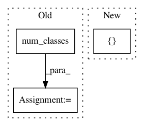

12f2879ed31b677cdefa0d73d663781b2ec72880,keras_retinanet/bin/debug.py,,run,#Any#Any#,158
Before Change
// draw anchors on the image
if args.anchors:
anchors = anchors_for_shape(image.shape)
labels, anchors, anchor_states = generator.compute_anchor_targets(anchors, annotations, generator.num_classes())
draw_boxes(image, anchors[anchor_states == 1, :], (0, 255, 0), thickness=1)
// draw annotations on the image
if args.annotations:
After Change
anchors = anchors_for_shape(image.shape)
labels_batch, regression_batch, boxes = generator.compute_anchor_targets(anchors, 1, [image], [annotations], generator.num_classes())
labels, anchor_states = labels_batch[0, :, :-1], labels_batch[0, :, -1]
// draw anchors on the image
In pattern: SUPERPATTERN
Frequency: 3
Non-data size: 3
Instances
Project Name: fizyr/keras-retinanet
Commit Name: 12f2879ed31b677cdefa0d73d663781b2ec72880
Time: 2018-07-16
Author: lacatusu.valeriu@gmail.com
File Name: keras_retinanet/bin/debug.py
Class Name:
Method Name: run
Project Name: PavlosMelissinos/enet-keras
Commit Name: d5f386ee8b68b01e77278f2b318de3aebbc55373
Time: 2017-10-04
Author: pmelissi@iti.gr
File Name: src/experiments/core.py
Class Name: Experiment
Method Name: model
Project Name: senarvi/theanolm
Commit Name: 4be4f3dbfb596961262e83d052b2d5dd59dddb8c
Time: 2016-11-19
Author: seppo.git@marjaniemi.com
File Name: theanolm/network/softmaxlayer.py
Class Name: SoftmaxLayer
Method Name: create_structure